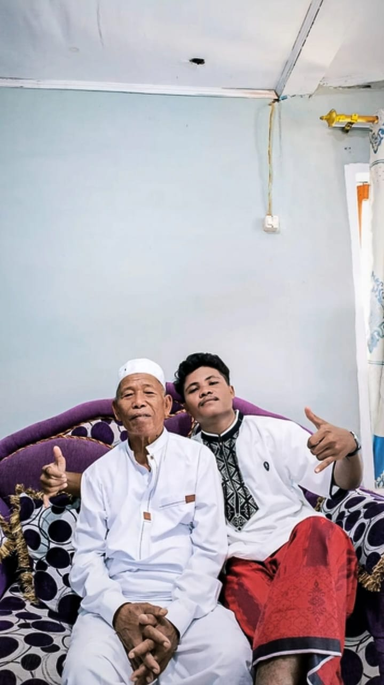
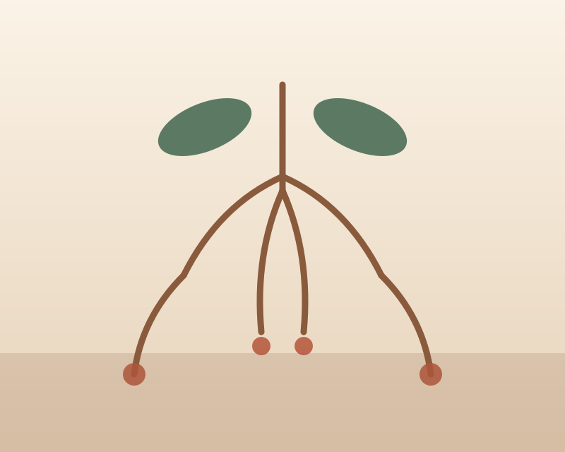
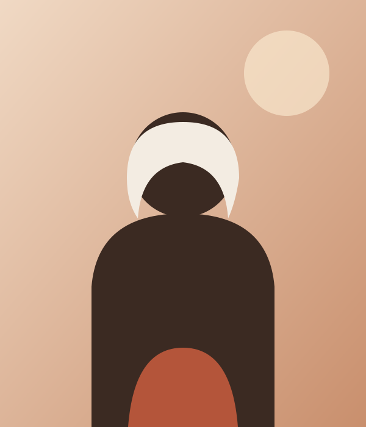
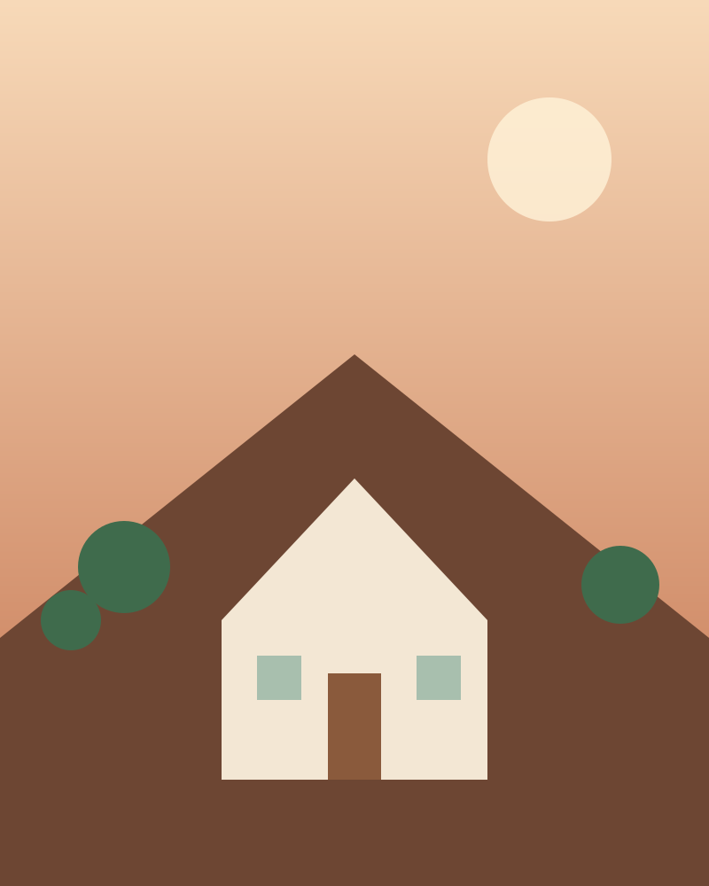

Menghormati yang lebih tua
Anggota yang lebih senior didahulukan, bukan karena umur, tapi karena pengalaman.
Usman Baco Family · Sejak 1972
Ini ruang bersama kami. Tempat foto lama, nama-nama kecil, dan cerita yang tak pernah habis diceritakan di meja makan.


Cerita Kami
Semuanya dimulai tahun 1972, ketika dua orang muda memutuskan membangun rumah kecil di Bandung. Rumah itu sudah lama tidak ada, tapi kami masih punya cerita yang lebih besar dari bangunan dindingnya.

“Kalau ada yang bisa dibagi, jangan ditahan sendiri.”
Hajjah SitiYang Kami Pegang
Nilai-nilai ini tidak tertulis di dinding rumah, tapi terbaca dari cara
Anggota yang lebih senior didahulukan, bukan karena umur, tapi karena pengalaman.
Rezeki dibagi, informasi dibagi, cerita dibagi. Tidak ada hitungan yang tercatat.
Setiap rupiah generasi ini ada bunuhnya. Itu yang membuat keluarga ini bertahan.
Cerita panjang yang menumpuk di ruang tamu, hampir selalu bermula di rumah ini.
Wajah-wajah
Setiap nama di bawah punya peran tersendiri: nenek yang menjaga tradisi, ayah yang menopang, anak-anak yang meneruskannya.
Penjaga cerita lama dan kursi meja yang paling panjang.
Bangunannya pelan-pelan tapi tidak pernah berhenti.
Tempat semua kabar baik dan buruk memulihkan diri.
Penerus andalan keluarga di masa kini.
Mari Terhubung
Kami terbuka untuk cerita, kenangan, dan tambahan foto yang selama ini tersimpan rapi di album keluarga.
